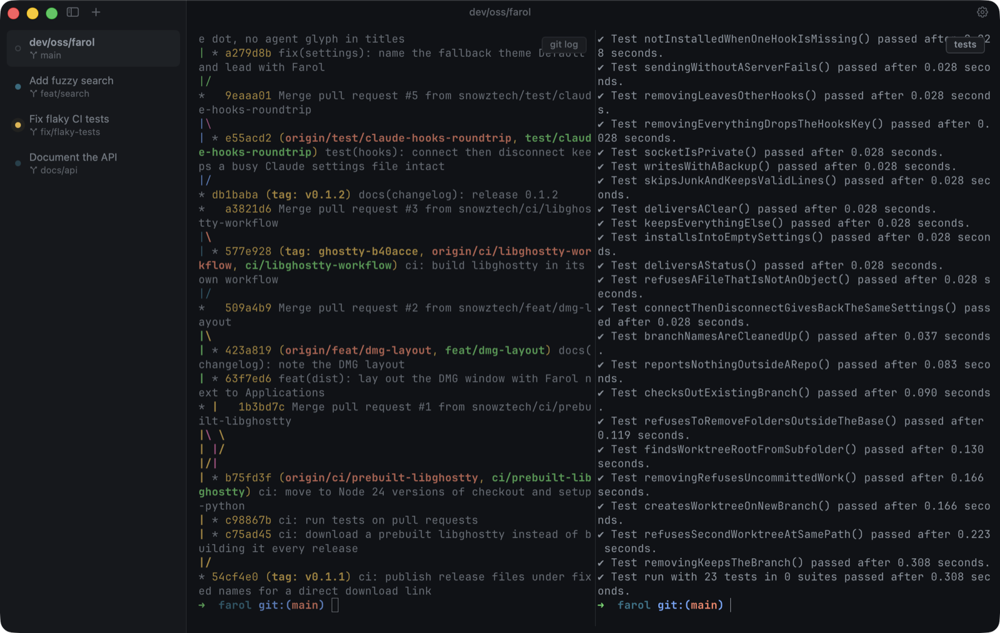

Farol
A fast macOS terminal for working with coding agents.
Apple Silicon, macOS 14 or later. Signed and notarized. Free and open source.

- One worktree per agent. Parallel agents never touch each other's files.
- Built on libghostty. Ghostty's speed, themes and config.
- A real Mac app. Splits, search and settings in the app or in a file.